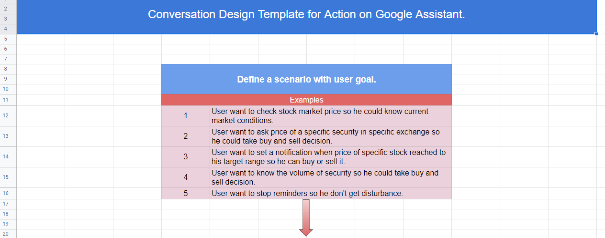
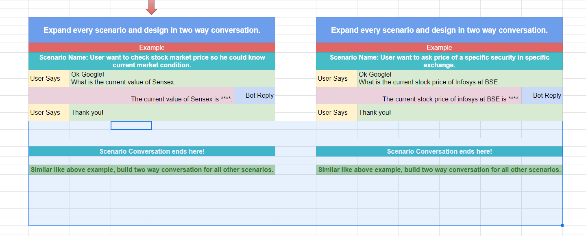

User stories are a straightforward and informal way to communicate end user's requirement and goals to all stack holders of the product or application.
Its main goal is to define how a software feature will provide value to the user.
In this article, we'll see how to write user stories, how to expand them to details and how to set their priorities to move forward with them.
Why do we need to create user stories?
Avoiding and being unknown with user story designing can lead you to unwanted development cost and delay in project building. It can wander all stack holders to an unguided path.
As we know user stories, are an informal way to communicate end users requirement and goals.
Let’s see some examples of user stories related to a cab booking app.
And likewise, there could be more user stories for this app based on the number of features.
If we go through all the above user stories, we can see a specific structure and formation of it. All user stories have the core of, User Role, Task, Objective.
As a user <User Role> I want to login to my application <Want to do> so that I could search for a ride <Purpose>
As a user <User Role> I want to search for cab availabilities <Want to do> so that I could book a ride.<Purpose>
This formation keeps user stories, a role focused, clear and meaningful.
To write user stories you can follow the rule.
Write down your user role + Write down his action + Write down hi purpose.
And the combination of this three will help you write user stories.
Example:
Admin (user role) want to see all logged in users (action) to give them instructions (purpose).
How to expand user stories to details?
From a single sentence of user stories, we only get the role, action and purpose of it.
It doesn't show how we'll do our action? What details do we require to act?
In the expansion part, we mainly focus on the detail of the story.
Let's see an example:
From a single sentence of user stories, we only get the role, action and purpose of it.
It doesn't show how we'll do our action? What details do we require to act?
In the expansion part, we mainly focus on the detail of the story.
Let's see an example:
User story A user wants to log in to the application so he could book check availability.
To expand our user stories, we can mainly focus on the data which we mandatory require from our users.
In this case, the user's mobile number and an OTP is enough for login.
Let's assume one more example of the payment gateway account login.
In such a case, the user may need to provide his login username and password with OTP verification.
Similarly, for your user stories, you can write more explanation details to it.
Recently I was working on a Google Assistant action, and I wrote my user stories in the following way. It helps me to finish my work with ease.
 Setting priorities of story execution helps you to focus on building the main features first.
There are several different methods to priorities user's stories. Choosing a priority method is depends on project owner, manager or development team. I'll share one method here which, I used on different projects. You can use it according to your choice.
Set the priority of user stories based on low, medium and high and perform the task accordingly.
User stories help you to share product goals to all the stakeholders and keep everyone on the same page.
It helps you to create details of the action and goal.
It helps you to set the priority of tasks to design your product fast.
Thank you for reading the post, if you have any question or doubt in mind, please let me know.
Thank you
Bharat